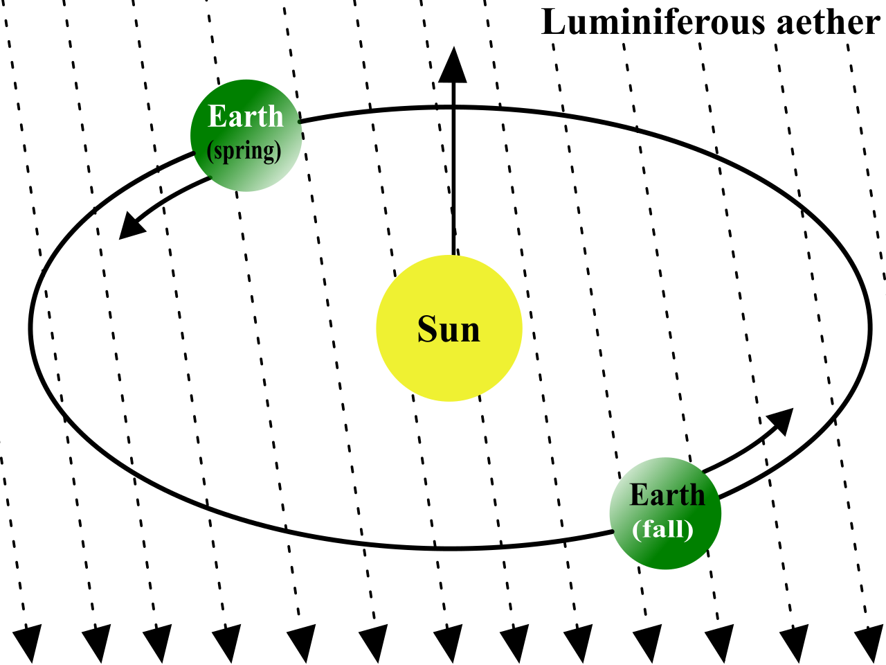
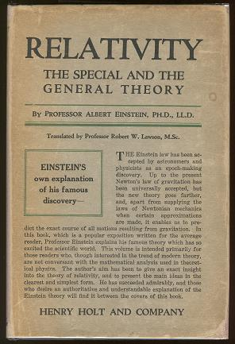

Relative To What
In our previous blog, we discussed how astronomy and genomics both struggled to define a true center. Each field treated the center as the key to understanding everything around it, whether universe or genome.
The Ether That Wasn't There
By the end of the nineteenth century, the search for a fixed center had moved beyond Earth and Sun toward a new candidate grounded in Victorian science. This point was the luminiferous ether which was proposed to be an invisible, weightless, rigid-yet-penetrable substance assumed to fill all of space so that light waves would have something to wave in. In the new model, the ether was taken to be at absolute rest. If you could measure speed relative to it, you would know an object's true velocity through the universe.

This looked like a new, enlightened approach. But the privileged center had just been replaced. Instead of a true absolute position, the true value had moved everywhere and the efforts were now focused one derivative higher on understanding a true absolute velocity. The Earth and Sun were free to move. The ether, a substance available at all positions, took over the job of standing still.
In 1887, to catch the Earth drifting through it, Albert Michelson and Edward Morley built an exquisitely sensitive instrument that compared the speed of light along different directions. The result was a resounding, embarrassing nothing. No drift. No directional difference. No ether wind.
The ether, if it existed, was doing an excellent job of hiding. The better the instrument, the clearer the absence of a privileged frame became.
Keeping the Ether
The physicists did not abandon the ether based on Michelson and Morley's experiment.
Naturally, for a careful, conservative field, the first steps would be to keep the hypothesis and support it by adding exceptions and explaining the null result away. Hendrik Lorentz did exactly this by adding to the ether a set of assumptions about how matter and clocks behaved while moving through it. His updated theory argued that objects moving through the ether contracted in the direction of travel while their clocks fell behind. The corrections were tuned precisely to hide the ether wind so, naturally, they worked and fit the experimental data well. This update was also the latest in a growing pile of bolted-on corrections, each one doing the specific job of preserving a thing that no experiment could find.
Genomics has taken a similar approach, with the latest pile of corrections looking like a formal solution.
The Human Pangenome Project assembles many diverse human genomes into a connected graph instead of forcing each one into a single linear sequence.2 Rather than describing every genome as a departure from one chosen path, a pangenome lets a genome take one of many alternative paths through a shared structure. This is the obvious Copernican move. Stop measuring everyone against one genome and start representing human diversity relationally. The object of interest now is the relation itself and not any one sequence taken as the origin. This is a big change since it is not another swap of one center for a prettier center.
Around that representation sits a second layer of machinery, Lorentz-shaped, whose whole job is to keep a variant's identity from dissolving every time the coordinates shift underneath it. Think of it as a change-of-address service for DNA. dbSNP assigns each variant an rs number that persists as assemblies come and go. Databases like ClinVar keep a variant's clinical evidence pinned to that identity. HGVS notation refuses to write a change down without naming the reference it was measured against.
This whole machinery exists because the coordinates used are unstable, but the findings and medical benefits derived from them are incentivized to persist. Maintenance and exception scaffolding are not the same as a true, elegant solution. Each of these systems pushes reconciliation into a single decision point. Someone, not some rule, has to declare two differently written observations as the same variant, and an rs number is only a durable label for whichever observations have been filed together by a person or some pre-specified rules based on a fixed reference. An rs number shows only that those observations have been filed together. It does not prove that they describe a single reference-independent event.
Genomics has gotten very good at forwarding identity from frame to frame, but it has not established what, underneath the forwarding, actually stays the same. Because of this, the pangenome, on closer inspection, may be another Tycho-esque approach rather than a more elegant answer. With the pangenome, the center is now a graph, but there is still a central coordinate structure. Results expressed through its paths and nodes often have to be translated back into the reference-relative forms that databases, laboratories, and clinicians already use.
While the pangenome allows the representation to become more truthful, the concern is that it does not remove the foundational assumption that genomic meaning must be stabilized by some privileged coordinate system. In this view, the approach remains position-focused and ultimately reconciles to a designated position, just like Tycho. The pangenome then looks like more exceptions bolted on instead of a new foundational theory.
So why, with no Inquisition anywhere in sight, has nobody taken the next step to remove the anchor?
The Premise You Can Delete
In physics, somebody did take the next step.
Einstein's answer in 1905 was breathtaking mostly in its nerve. What if the ether simply was not there? What if there was no such thing as absolute rest at all? What if the laws of physics took the same form for every observer moving at constant velocity, and the speed of light was the one quantity all of them agreed on, irrespective of how fast they were going?
His answer, special relativity, did not patch the ether theory. It removed the premise that had made the ether necessary in the first place. Even so, Einstein and Lorentz made nearly the same predictions because they described length contraction and time dilation with largely the same equations.3 The difference was simplification. Lorentz kept a fixed point nobody could detect and required endless corrections. Einstein gave up the fixed point and resolved the corrections. Coordinates moved from foundational pieces to bookkeeping. The foundation became the invariant relationships.

For three centuries, astronomers and physicists had searched for the right center, first Earth, then Sun, then ether. Einstein's move was to deny that any absolute center existed. He pulled up the last anchor and found the model worked better without it.
Both physics and genomics started with a center, then kept improving it, relocating it, and correcting for it based on experiments that could never quite find it. Physics dispersed the center with the ether and moved to thinking about velocity, but that move still assumed a privileged rest frame underneath, even if it was a frame of rest rather than a location. Genomics started with RP11 and the Buffalo cohort, expanded as exceptions accumulated, and with the pangenome scattered the single center into a graph. But it still relies, today, on a position-centered reference.
Physics has left position behind. There has been no Einstein in genomics. Genomic relativity would start from evidence that does not already assume coordinates and variants. Both could then be introduced when they are useful.
The Church Has No Address
So why was physics able to adapt but genomics has not?
A centralized authority is easier to shift than a decentralized one. Galileo had one institution, the Church, to which he could direct an angry letter. Human genomics has so many that it might as well have none.
Think of the reference genome as a toll bridge. It is currently the only river crossing for miles, so everyone uses it because it's the known route. Whether researchers are presenting new results or diagnostic labs need to bill a test, any deviation from the reference makes the path exponentially harder and raises more questions. Different groups may have different missions, but they share common incentives around reproducibility and impact. Both depend on the reference-based coordinate system. This foundation has to stay still enough that every assay, database, publication, and reimbursement decision keeps connecting to the others. Sociologists call this an obligatory passage point. Once one forms, no one fully owns it, and yet everyone depends on it and takes it for granted.
Stacked on top is a vertical institutional pile that adds inertia to the system. The NIH funds and maintains the reference assembly. The ACMG sets standards for deciding whether a variant is pathogenic, and those variants must be described against a specified reference sequence.5 Bodies like ASCO turn "pathogenic per ACMG" into actual treatment guidelines. Each layer intertwines its legitimacy with its foundations. No single body can swap that foundation without either invalidating itself or invalidating everything stacked above.
This structure also drives the business realities of this same system. Long-read sequencing can generate complete personal assemblies and has narrowed the gap with short-read sequencing, but adoption remains limited. Healthcare protocols and billing are defined in relation to the reference-based system. Why would anyone move fast to adopt a more expensive technology if the current stack already works? The current system is not built for tests whose value requires time to compound. Where there is forward thinking, it usually takes the form of adding long-read capabilities to the existing architecture and using them to build a mass-market reference-based test. The incentives in biology just keep driving a more complex reference.
Physics, in contrast, moved quickly. Max Planck was championing Einstein's special relativity within a year of its publication. By 1908, Hermann Minkowski had recast the whole theory in the language of spacetime, and within a few more years relativity was part of the central vocabulary of the field. Much of that speed came from necessity. The ether had failed, and several other cracks in classical theory had formed.
Genomics has the tools. It has the foundational cracks. It does not appear to want saving.
How to Pull Up the Anchor
So what would it mean in genomics to pull up the anchor and remove the privileged reference? How do we study genomics without a center?
You'd start from the simplest foundation. DNA and RNA molecules exist as physical objects. They have ordered sequences, and they exist in and interact with environments. With advances in sequencing, the first goal becomes reconstructing those molecules as faithfully as possible without a reference. That lets us study, without bias, how they are copied, how genomes are transmitted to progeny, and how genomes and environments change over time.
From this foundation, the existing vocabulary can be reexamined. A genomic position is an address within a chosen assembly. A variant is a description produced by comparing two genomic states under a particular rule for lining them up. A mutation is a causally ordered transition through time. Forces like selection are the differential continuation of genomic states in a particular environment.
The reference was a practical tool for a field that needed to start somewhere, and any replacement has to preserve what it made possible. It should also recover what reference coordinates miss, including large rearrangements that break the relationships among them. A reconstruction-first approach describes the resulting molecule directly. Like Einstein's treatment of the ether, it removes the need for extra rules instead of adding more.
The conclusions that survive a change in reference are real biological insights. The conclusions that do not were always just bookkeeping.
Genomic relativity, then, is less a theory than a way of working. It builds from the molecules and treats coordinates as description rather than foundation. Human genomics sits roughly where physics sat in its Lorentz era. The field works, but its concepts are cumbersome and its methods remain gated by specialists. It may be due for a faster timeline than astronomy managed.
But do not hold your breath for an Einstein. Hold it for an accountant who finally writes a billing code for "the truth, reusable."
Endnotes
-
Cronholm144, "AetherWind.svg" (2007; updated 2017). Image via Wikimedia Commons, "File:AetherWind.svg." Licensed under CC BY-SA 3.0; converted from SVG to PNG with a white background. https://commons.wikimedia.org/wiki/File:AetherWind.svg; https://creativecommons.org/licenses/by-sa/3.0/
-
Human Pangenome Reference Consortium, "A draft human pangenome reference," Nature 617 (2023): 312-324. Represents 47 phased diploid assemblies as a graph allowing many alternative paths through one structure rather than one linear sequence. https://www.nature.com/articles/s41586-023-05896-x
-
On the empirical equivalence of Lorentz's ether theory and Einstein's special relativity, see the philosophy-of-physics analysis archived at PhilSci, "On the Empirical Equivalence between Special Relativity and Lorentz's Ether Theory." Lorentz's theory kept the ether but, with length contraction and local time, reproduced essentially the same observable predictions as special relativity, and the difference was interpretive, not empirical. https://philsci-archive.pitt.edu/9871/
-
Albert Einstein, Relativity: The Special and the General Theory, translated by Robert W. Lawson (New York: Henry Holt and Company, 1920). Cover image via Wikimedia Commons, "File:The original 1920 English publication of the paper..jpg." Public domain in the United States. https://commons.wikimedia.org/wiki/File:The_original_1920_English_publication_of_the_paper..jpg
-
Sue Richards et al., "Standards and guidelines for the interpretation of sequence variants: a joint consensus recommendation of the American College of Medical Genetics and Genomics and the Association for Molecular Pathology," Genetics in Medicine 17 (2015): 405-423. The ACMG/AMP variant-classification framework requires sequence variants to be described against a specified reference sequence. https://www.nature.com/articles/gim201530